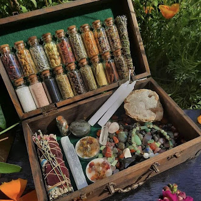
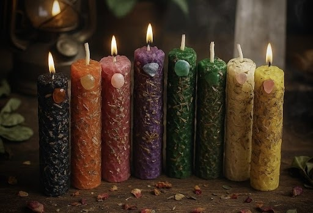
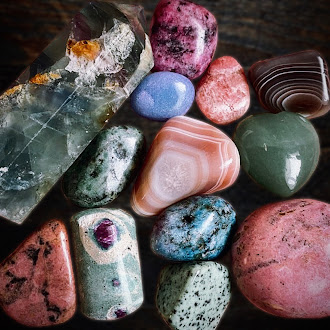
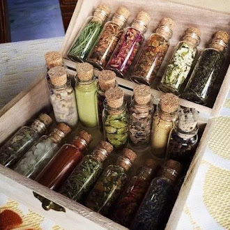
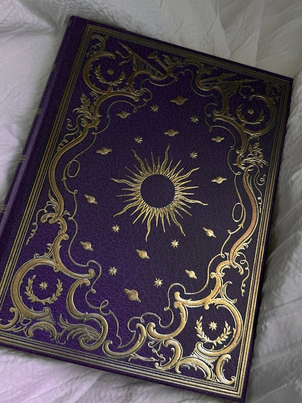

Supply Knowledge
Some basic supplies for beginners include candles, crystals, herbs/spices, and a journal. These items can be used for intention setting and learning more about your practice.

Candles
Candles are often used in rituals for setting intentions and focusing energy.

Crystals
Crystals are used for different purposes like protection, love, and calming energy.

Herbs & Spices
Herbs and spices are often used for cleansing, protection, and setting intentions depending on their meaning.

Journal
A journal can be used to write down thoughts, intentions, and experiences throughout your practice.
Witchcraft is often associated with harmful spells, but many people focus on protection, healing, and personal growth.